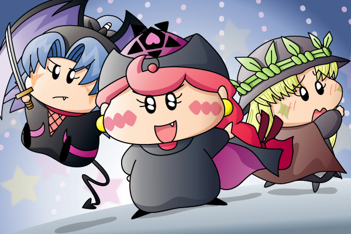

２００５年７月にムルモ屋本舗の掲示板上で行いました企画第３弾『ちゃあみんぐに登場して欲しい妖精さんは？』の結果を本記事にて報告します(^^)。
■ルール
ちゃあみんぐに登場して欲しい妖精を５位、４位、３位、２位、１位の順に５つあげます。皆様からの投票により各キャラに以下のpointが加算され、最もpointの高い妖精が最も登場を期待されている妖精となります。
| １位 … 10point |
| ２位 … 8point |
| ３位 … 6point |
| ４位 … 4point |
| ５位 … 2point |
投票にあたり、２００５年７月現在ですでに登場している下記の妖精は除きます。
| ミルモ、リルム、ムルモ、ヤシチ、パピィ、パンタ、 サスケ、ハンゾー、ミモモ、クモモ、 イチロー、ジロー、サブロー、シロー、ゴロー、 ペータ、ビケー、ガビン、マンボ、アンナ |
なお、私の勘違いにより上記にヤマネを入れ忘れました(^^;。ヤマネは妖精忍者のNEWテーマソングに参加していましたが、あの登場時間の短さだけでは満足できないので今回ノミネートさせたということで（強引）。
■結果発表
さくらんぼ☆”さん、koさん、鳥塚つばささん、Bom一等兵さん、しゅんさん、ピピッチさん、流星 ルル★～さん、レインボーさん、アコモさん、multalさん、JRAさん、ひなたさん、ユピーさん、skmさん、榎稟☆”さん、るっちぇさん、Satさん、そして私からの計１８人からの投票により以下の順位となりました♪
| １位 | 94point | アクミ |
| ２位 | 88point | ヤマネ |
| ３位 | 68point | アロマ |
| ４位 | 38point | カメリ |
| ５位 | 36point | ネズミ |
| ６位 | 26point | オトメ |
| ７位 | 18point | ダアク |
| ８位 | 16point | ベルル |
| ９位 | 12point | ルンバ、ポンタ、ムーン |
| １２位 | 10point | ミライ、ワカバ |
| １４位 | 8point | キンタ、ウィン、トプル、デンタ、ピカリ、エンマ先生 |
| ２０位 | 6point | アテネ、シャドル、ユリン、ソフト、ハーモ |
| ２５位 | 4point | メカモ、チムル、アクア、パパン、ツツジ先生 |
| ３０位 | 2point | アンリ |
僅差でアクミが１位をゲット。１２０話「ローレライ伝説」で見られたアクミの本当の優しさは、楓やリルムとの友情、そして新たな恋と、彼女ならではのセカンドステージを期待したくなりますよね。
２位は惜しくもヤマネ。ヤシチとの距離を縮めるべく今も勉強を続けていると思いますが、そろそろその成果をアニメ上で見せて欲しいです。妹想いのネズミとともに登場してくれるとうれしいですな。
３位はファンの多いアロマちゃん。気になる幼馴染みへの彼が誰なのか？それに尽きますね。もしも今度登場してくれる時は、ドジな性格は少しは治っているのでしょうか。
それでは今回も企画の記念に、１位～３位の妖精を描いてみました(^^)。
アクミ＆ヤマネ＆アロマ(1) [PDF]

アクミ「あたいたちが再び登場するには…。
やっぱ悪役になってミルモたちを攻撃するのが一番じゃん？」
ヤマネ「あまり気が進まないでございますが、私も兄様ともう一度戦いを挑もうと
決心した次第でございます」
アロマ「私にはこの格好は…」
ちゃあみんぐでの出演を狙うアクミさん、年下の人気妖精を引っ提げてアニメ制作会社に突入を図ろうと計画中～という絵です(^^;。
すでにちゃあみんぐが放送中という設定ですので、黄色アクミは黒アクミに着替え（なので耳は普通です）、ヤマネもデビル忍者のボビルに変装しています。アクミに命令されたアロマちゃんは、黒っぽい衣装を無理矢理着させられるのでした。
果たしてこの３人の出番はやってくるのか？アクミとアロマの登場の可能性は限りなく低いと言えますが、OPに登場しているヤマネちゃんは最低でももう一回は登場して…くれますよね？アニメスタッフさん！
それにしても描くのが大変な３人だこと…特にボビルのヤマネはアニメDVDを何度も見るハメになり、かなり時間がかかってしまいました(^^;。
ここからは皆様と私の投票カキコを再掲します。
★こやまる★
５位：ルンバ
マンボのお姉さん。彼女自身が何か悩みを持って、今度は弟のマンボがお姉さんを助けるような逆の展開を見てみたい！マンボとは違って（失礼）よく出来たお姉さんですが、同じ姉弟ゆえに何か欠点となる性格が隠されているような気がするなぁ。
４位：カメリ
もはや言うまでもなく、カメリとサスケ…じゃなくてもいいから誰かとの恋を公式でも（妄想）。パピィの助っ人として、住ちゃんを応援しに現れる…という可能性もあるのかな。
３位：オトメ
おそらく今年も１回くらいは登場してくれそうですけど。オトメが安純ばりにヤシチにくっついて、「離れてくださいでございます」とヤマネが引き離しにかかる平和(?)な光景が定着したら完璧ですね。
２位：ヤマネ
やはりヤシチとの恋の続きがとっても気になって気になって…。かと言って煮え切らないヤシチですので、４年目はヤマネの方からがつんと愛を叫んでもらいたい！今年は松竹くんや桃ちゃんの出番は限りなく少ないのが、ヤマネの出番を考えると気がかりでなりません(T-T)。
１位：アクミ
あのままドイツで平和に…なんて展開はアクミの性格からすると考えられないですよね。夏休みの間に沙織と一緒に日本に戻ってきて、主要パートナー６組１２人にアクミが加わって、さらに恋のバトルを引っかき回してもらうことを希望♪もしくは日本にるネズミをからかいに行くという、二人だけのストーリーもアリで（妄想）。
★さくらんぼ☆”さん★
５位⇒ヤマネ
正直、ヤマネの恋の方は応援できないのですが、ヤマネ自体は大好きなので出てほしいなぁと思います。考えて見れば、もう桃ちゃんって中学生入学してるはずですよね、そう思ってヤマネの活躍も増えると思っていましたが、、、今のところ出てなくて残念です・・＞＜ 今後出演してくれる事を期待します！
４位⇒メカモ
・・えっ！！？と思う方もおられるかもしれませんが、またメカモとミルモが一致団結してワルモ団をやっつけてほしいなぁと思いましたので、４位に入れさせていただきました。個人的にメカモは激カワだと思いますｖ
３位⇒ポンタ
グルミ族で一番好きｖあの癒し系の顔になんともひかれるものがあります。・・可能性は大きく低いですが、出てきてくれると嬉しいですねｖ もう一つの望みを叶えてくれるのなら、キンタと共にｖｖ（ぇ
２位⇒ネズミ
やはりこの方ですよｖｖまたはラットとして再び登場してくれるのもいいなぁ・・ｖと思いますね♪私はネズミはアクミとくっついてほしいなぁ・・と思ってます。あの嫌味ネズ様には、絶対に出てきてほしいと心から思いますね。
１位⇒アクミ
やはりこの子でしょうｗできればまた沙織と共にご登場してもらいたいです。そしてネズミさんとイイ感じになってほしいですねｗ（え もうネズアク大好きですｗｗ アクミにはワルモ団とも会話をしてもらいたいです。『なんだ・・マヌケ団か・・・』なーんて言ってｖｖ（お 私はアクミに一番出てもらいたいと思っているので、堂々の１位に入りました☆
★koさん★
5位 アテネ
今度は実力でキンタに挑むシーンが出てくれると嬉しいですね。そんなに大きな影響力を持っているキャラではありませんが、個人的に好きということで5位に
4位 アクミ
4位はこの方。沙織が日本に用事で帰ってくるときに一緒に登場して欲しい。その時は当然ネズミとペアで…(ナニ考えてんだよ)
3位 ヤマネ
やっぱりこの子を活躍させて欲しい！「ヒヨコウォーズの時に影で覗いていた桃は
松竹が安純に恋をしたと勘違いする」なんて展開から協力する形で出てきて欲しい。「一緒に安純を倒そうではないか」と協力する事でヤシチとの恋愛関係も進めて欲しいなあ。
2位 アロマ
2位はこの方です。幼馴染の存在が引っかかってしょうがないので早く出してくれ～
1位 カメリ
トップはカメリです。いつでも、どこでも、何が起きても冷静沈着な彼女ですが、一度はパピィと喧嘩になるシーンを出して欲しい！あ、タイトルは「ウサギとカメ」で…(謎)
★鳥塚つばささん★
５位：カメリ
彼女の存在は大きいですよ！パピィちゃんとの絡みも楽しみ。サスカメも勿論いいなあと思っておりますし、個人的にパピカメも好きなので、カメリを応援するパピィのお話とかが欲しいなと思います。あとは新作漬物！折角パピィちゃんがレギュラーになったんですもの。いつか彼女が出てくるのを楽しみにしたいですね。
４位：チムル
チムル→ミライが大好物なのです（笑）（マイナー道一直線）
時の妖精の出番が殆どなかったので、ゲームに沿ったお話をもう一度でいいからしてほしいんですよ。残念ながら、いまだにゲームの設定が生かされてない！お説教を聴きたい！チムルには是非ミライに恋をしてほしい！（妄想）素直になれないチムルを見てみたい！あの声でもっと話して欲しい！
３位：シャドル
これは単純に好きだから、ということもありますけどね。夢の妖精が好きなんです。どちらかといわれればシャドルなので、彼に投票させていただきます。出来ればドリム→シャドルを見てみたい。あとどんな声なのか聞きたい！（だもんねー だもんねー）あとは楽器と好きなお菓子を知りたいんです。妖精大図鑑を買えばいいのかな？
２位：アクミ
彼女に会いたい！沙織ちゃんには是非帰国していただきたい。あの声で「相変わらずだな」とか言って欲しい。元気で可愛いアクミを、もういちど見たい！いや、一度といわずレギュラー化してほしい！カムバックアクミ。むこうでの生活も見てみたいです。
１位：ミライ
こやつも完全に「純粋に好きだから」という理由が一番。ミライ大好き。ごぉるでんでの出番の少なさに唖然としてしまいました。ゲームではあんなに活躍していたのに！奴がとんでもなく好きです。というか、時の妖精は是非もっと出てきて欲しいですね。｛ひみつ：ひみつ：妖精時計は彼にしか使えないし｝、もっと活躍して欲しかったのです。そして昔の自慢話をくどくどと語って欲しかったのです。詩の才能も確かめたかったです。私にとってはまだまだ不完全燃焼でした。
★Bom一等兵さん★
5位：ヤマネ
恐らく先に登場しそうなので5位です。多分・・・。
4位：アクミ
出てきても楽しいと思います。ワルモ団を倒したり、ネズミとのラブシーンがあってもよいと思いますね
3位：ポンタ
かわいい。というのが理由ですｗｗ パンタとの関連で登場しても楽しそうです。
2位：ウィン
ガイア族には登場願いたいです。その中でも一番好きなウィンだけ書かせていただきました。もちろん全員同時登場になると思います。
1位：ルンバ
是非、登場してもらいですね。マンボと一緒にが希望ですね。
★しゅんさん★
５位 ムーン
コミックスでは、良のパートナーですよね。この妖精が、もしかしたら、新展開を・・・！？
４位 アクミ
また、アニメに登場してほしいです。でも、自分は、ダアク様の部下のときのアクミの方が好きです^^)
３位 オトメ
オトメが出て、おもしろい話になってほしいです。オトメとヤシチの話とか。
２位 トプル
ガイヤ族も一緒にでてほしいです。ガイヤの里が、また見れたらいいです^^)
１位 ダアク
また、よみがえって出てほしいです。この人が出ると、絶対にミルモは新展開になりますよね！
★ピピッチさん★
５位 オトメちゃん
《やっぱり、この子は個性的でおもしろいキャラクターですし、周りも楽しくなりそうです♪本当の理由はヤシチが目立つからなのですがね（笑）》
４位 アクミ
《ごおるでん等では、たくさん出ていたのに、全くでてこないとなるとこれはまた寂しいものですよ・・。ぜひ、再登場を・・。》
３位 ネズミ
《妖精忍者好きの私としては、１人でもかけていてほしくないのですー。ヤシチやヤマネとの２ショットも見たいですしね。》
２位 ダアク
《久々に見たいですーっ。是非、アクミちゃんの思いを・・。また何かを起こして欲しいですね（おい）》
１位 ヤマネ
《やっぱりこの子ですよっ！！ちゃあみんぐにはまだ出ていないのですね。聞いて初めて知りました（おい）びっくりですよーっ。サスケファンの私としては、３角形関係が本当に気になります。是非でてきてほしいキャラクターですね。》
★流星 ルル★～さん★
５…カメリちゃんｗ
この子は、ワタクシ的に、久々のゴールドメダルをあげたいで賞ｗ（ぇ でも、残念ながら、５位サンになってしまいましたぁ…。訳は、まだ恋をしてないと言う事と…ごにょごにょ・・・。（謎 私的には、ハンゾーとカップルになって欲しいのですがねー…。
４…ネズミ師匠ｗ
いやはや…この方には出てもらわないと…、師匠ですしｗ（ぇ 久々に、ヤシチの兄貴との『ヤマネ姫』を巡っての決闘を・・・。『ヤシチィ！勝負でござるー！』と旅から帰ってきてくれーぃ。本当は、ラットもみたいけれど、99．99999％無理ですね＾＾；
３…ヤマネちゃまｗ
いやぁ…一回、ΝΕW ソング、歌ってましたがねー。でもっすねー、ヤマネふぁんとしては、アレだけじゃ…。それに、桃ちゃんも確か、中１になってるはず…、久々に、安純姉よりもずげぇアタックを見たいと言う、妄想が・・・。
２…アクミの姉貴ｗ
ドイツに行ったっきりと言う裏切りをアクミがするとは思えませんｗ 沙織が一時帰国…、アクミもミルモ達に再会して悪ぶりを見せる・・・、んでんで、皆の恋をめっっっちゃくちゃに掻き回しちゃいそう…；
１…アロマ嬢ｗ
この娘さん…、と言うよりお嬢様には出て欲しい想いがギラギラ…ｗ 幼なじみの彼と一緒に来ないかしらｖパピィもレギュラーになったし…。もう、アロマがこのまま、消滅みたいなことがあったら。。。生きて行けません。想像するだけでも背筋がゾクゾク…うぅ寒い。…と言うわけで、ゴールドメダルはアロマが噛むことになりましたｗ
★レインボーさん★
５位ネズミ
ネズミの口癖の「フフフのフ～」が気に入ってます。彼は「デビル忍者見参ダゼ！」以来登場してませんからね。
４位アクア
僕的にはガイア族の中で彼が一番かわいいです。最近ガイア族全然登場してませんからね・・・。
３位ベルル
４位と同じく彼女が時の妖精の中で一番かわいいです。アイコンもあって嬉しいです。アニメで再登場してくれたらもっと嬉しいんですけど・・・。
２位アクミ
僕はアクミの事が気に入っていたんですが、「ローレライ伝説」以降登場してないですよね。また出てほしいです。
１位ワカバ
「え？」と思う人もいると思いますが、僕は数多い妖精の中でベスト４に入るくらい気に入っています。でもちゃんとした登場は「ニュース３人娘」ぐらいで「止まった妖精界」とかでちょっと登場して終わりみたいな感じでワカバが好きな僕にとっては悲しいです・・・。
★アコモさん★
５位 オトメくん？
ヤシチが嫌がるオトメ、また綿密な計画でヤシチのハートをゲット？出来るのか…密かに乙女駅が出てくる事にも期待！？
４位 アテネくん
前回は、いわゆる「時の人」的に出てきたようなアテネ、もし出てくるのならパートナーと息の合った所を楓ちゃんたちが応援に行くと言う展開や、アテネのピンチに「あの時はアテネが私を助けてくれた、今度は私が助ける番だよね。」と言う展開も期待しちゃいます。
３位 アクミちゃん
沙織と一緒に日本へ戻ってくると言う設定で、森下さんが入ってややこしくなっている？所でさらにややこしくなると言う展開に期待！？
２位 ヤマネちゃん
ヤシチとサスケが意識する女の子、好きだけど好きだと言えない、また好かれているのに素直になれない、師弟関係も絡んだりとといじらしいと言うか、純粋と言うか、そういったシーンを期待しちゃいます。
１位 アロマちゃん
またムルモちゃんへ…ではなく、別の妖精さん（優しいペータくんや、お互いドジ？なマンボくんあたり）とのカップリングも期待したいですね。
★multalさん★
5位→ユリン
かわいいしイチローとの恋も気になります。
4位→アロマ
ムルモとのデートシーンをまた見たいし、あれを一回で終わらせちゃうのはもったいないと思います。
3位→アクミ
ダアク様の手下の頃のアクミが好きなので今後の活躍に期待します！個人的にはミルモと口調がほとんど同じなのが気に入ってます。
2位→ネズミ
またヤシチとのケンカが見たいです。妖精忍者好きとしてまた一行が集結した話を…
1位→ヤマネ
自分も一番出てほしいです！ヤシチとの恋も気になるし...一体どうなるか気になります。
★JRAさん★
五位＞オトメ
ヤシチの嫌がる姿と、オトメの髭を、そる姿は、お約束の展開、今回もみたいです。
四位＞ユリン
multal さんと同意見です。続きが見たい。
三位＞ムーン
そろそろ、声優さん付きで、登場してほしいです。
二位＞デンタ
妖精らせくない、渋さがまたいい。
一位＞アクミ
今の状況がとにかく知りたい なんでもいいから、もう一度見たいです。
★ひなたさん★
５位＞ネズミ
ヤシチとの喧嘩が見てみたいですｖ
４位＞ムーン
声有りで原作のように出てほしいです（どういう事だ）
３位＞ヤマネ
ヤシ×ヤマの展開が気になりますｗ
２位＞アロマ
パピイとアロマの恋のバトルみたいなものが見てみたいなーと思います。
１位＞ベルル
一番好きなキャラだから本当は時の妖精全員と言おうと思ったのですが代表のつもりで。（笑）
★ユピーさん★
５位：：ハーモ
ん～、この子は、何と言っても『ローレライ伝説』の時のお話しにものすごく感動させられました。そこには、勿論アクミ＆沙織も入っているのですが。でも何となく＾＾；また楓たちにドイツへ行ってきてほしいです。久々にわんだほうまでの４組で…
４位：：パパン
これぞ、「え」と思う人いますよね。私は『怪盗パパン』の時のような推理系（？）好きですよ。なんか面白かった。なので今は城で捕まっているかどうか分かりませんがまた事件を起こしてもらいたいです。
３位：：ソフト
この子は、可愛さと性格が好きなキャラです。ん～やはり再登場するならパートナーとのお話しがいいです。ちょっと恋系ではよく想像できなくて＾＾；
２位：：アロマ
やはりこの子は私の中で上位にランクインしてきました。結構気になることあるんですよね。まずは恋愛、本名の子とのが気になります。一体誰なのでしょう？その子とのお話しで再登場を願いたいです。そしてそこに出てくるのが友情です。パピィちゃんとの関係は？仲良しさんだと思いますからパピィちゃんに応援してもらいながら恋愛話になるといいです。
１位：：ヤマネ
皆さん私ならこの子を選ぶと思っていたかも…。１回でてたけどＯＫだったので速攻１位に決まりました＾＾；やはり私も皆さん同様恋話を願います。ヤシチとは？サスケは？疑惑沢山です。やはり私はサスケくんが可愛そうだけどヤシチとラブラブになってもらいたいです。でもサスケくんを励ますハンゾーにも感動させられるんですよね。忍者全員参加でネズミがきてもいいですね。とにかくたとえ少しでもいいからヤマネちゃんに再登場してもらいたいヤマネちゃん大好きのユピーです。
★skmさん★
５位 オトメ
ヤマネとヤシチをかけて勝負してほしいです。
４位 アロマ
その気になる幼馴染との恋がとっても気になります。３位以下は前の書き込みのとうりなので、してほしい会話シーンを書き込みます。
３位 カメリ！
サスケ「あれ、何してるんだじぇカメリ」
カメリ「あのね～きょ」
サスケ「おお、またあたらしいお菓子漬物を持ってきてくれたのかだじぇ」
途中の言葉でわかってしまうようなシーンを期待します
２位 キンタ！！
キンタ「リルムしゃ～ん」
リルム「あっ、キンタさん」
キンタ「今日こそ結婚してほしいダス」
リルム「だから私にはミルモ様という婚約者がいますので・・・」
こんなやり取りからはじめてほしいです。
１位 ヤマネ！！！
ヤマネ「ヤシチ兄様、今日は私と・・・」
ヤシチ「おぉヤマネようやくきたか。今日の修行を始めるぞ」
ヤマネ「えっ、あっはい」
デートに誘いたいけど誘えない切ない感じから始まってほしいです。
★榎稟☆”さん★
５位：カメリ
＊パピィとの関係がある少女なので、パピィと一緒に協力して住ちゃんを応援するとか。または、サスハンとの恋物語を。私はどちらかというと、サスケのほうがいいと思いますｇ
４位：ツツジ先生
＊ワルモ団の魔法のせいで子供になったミルモを見つけたツツジ先生がくる...。（妄想） いわえる、ミルモがツツジ先生に恋したきっかけでツツジ先生を出してほしいと思います！
３位：ネズミ
＊絶対出してください！ヤシチに嫌味をいう兄さんに萌えですｖ アクミとの恋のシーンでもやってくださｉ ヤマネのパートナーである桃ちゃんとも、ヤマネ話で結構気があうかも。そして、いつも話してたり。（妄想）
２位：ピカリ
＊はい、少女は私が一番最初の愛好者キャラです。妖精学校の生徒ですし、ミルモと何かと関係がありそう。または、掃除仲間としてヤシチとも。是非、活躍してほしいですねッ
１位：アクミ
＊少女に期待がかかっていますな。何ヶ月か日本に帰ってきて、（沙織と） ミルモたちと喧嘩して波乱万丈の生活って奴が見たいでｓ 時たま、ネズ兄さんも現われたりなどしてアクミにも挑発をするなど。（妄想）
★るっちぇさん★
５位 アンリ
…と、センリなんですが、２人が一緒に出てこないことはないので、アンリが代表で（謎）個人的にアンリのが好きだからですけどね（笑）ちょっとした伝説みたいな妖精チックな物語が見れるのを期待してますっ！
４位 ハーモ
最初にこの妖精を知ったのがこの掲示板なんですが、実はまだ一度もあったことのない妖精なのです；；ローレライの話のころは見ていたんですが、ちょうどそんなときに限って録画を忘れてしまうという悲劇（おまえのせいだ） そんなわけで、ぜひとも見てみたい妖精なのですｖ
３位 アロマ
この妖精もまた、見たことのない妖精なんです（ぇ やっぱりパピィと同年代ですし、登場すれば、きっとパピィの恋の進展ありかと…。しかも、アロマの恋人というのがまだ発覚していないというので、ちゃあみんぐになってぜひ、恋人さんが分かるといいなぁ、という二つの理由で３位（適当）
２位 カメリ
この子は一回だけ見たことがあります～ｖｖこのおっとりとした性格は、和やかで大好きです～♪パピィに素直さを与えてくれそうですし、サスケとの仲も気になりますし…（妄想）
１位 ヤマネ
ここはもう、ヤマネ以外ありえないかと（は？） ヤシチのパッションが明らかになるような展開を期待してます～ｖｖそして、そのままサスケ×カメリみたいな展開も（しつこい）
★Satさん★
第５位……………アクミ
沙織とのエピソードをまた放送して欲しい。と言うか、沙織が帰国すれば早いんですけどね。そうすれば妖精×人間ペアも７組になって一層にぎやかになると思うのに…。
第４位……………カメリ
なんとなくまたあのまったりゆっくりなお喋りが聴きたい。
第３位……………オトメ
「オトチョコでラブパニ」第２版的なお話が観たい!!
第２位……………えんま先生
最高に笑えない駄洒落をもう一度…。
第１位……………アロマ
個人的にお気に入り名妖精でもありますが、ムルモとのその後のことも気になるし、「気になる彼」とのことも気になる。その辺をふまえて、再登場を強く希望しますっわ。
次回の企画もまたよろしくお願いいたします。このたびはありがとうございました。
(2005/8/13)